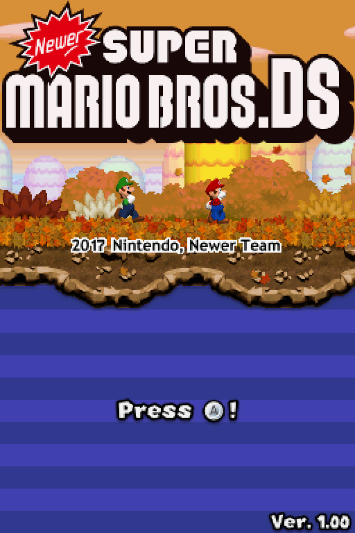
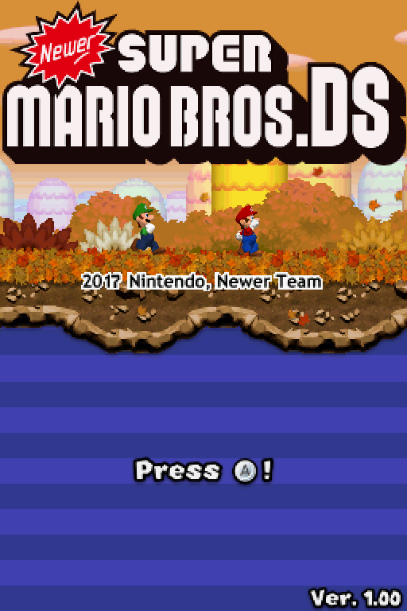
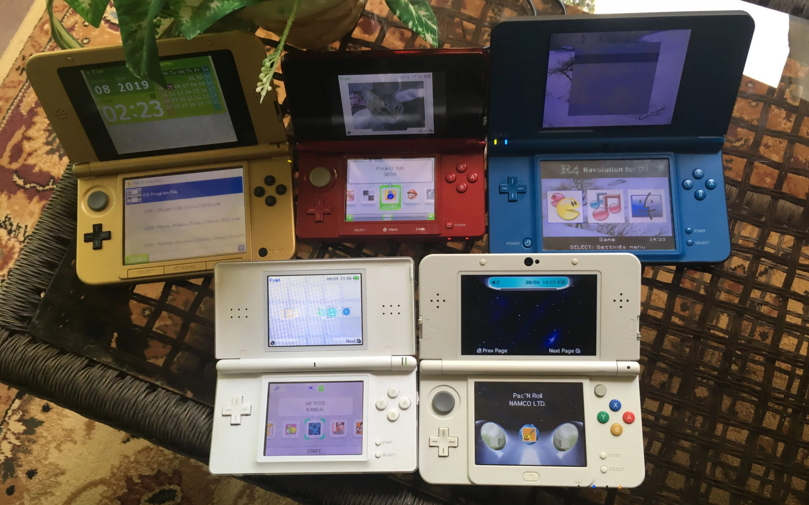
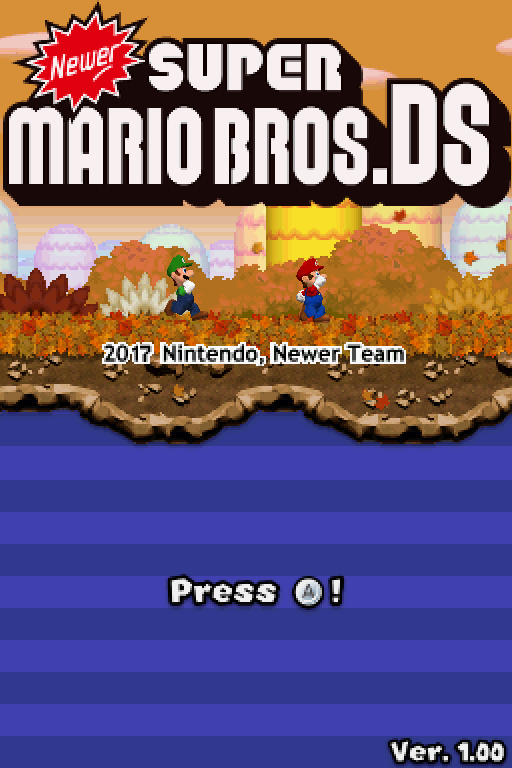

3DS controller is software that connects to a client on the PC and allows you to use the 3DS as controller buttons or keyboard keys, similar to connecting your 3DS to a Wii U and using it as a smash controller. Unfortunately, I was unable to get Steam to recognize the 3DS, but it does work in emulators and standalone games. Input redirection is built into Luma, and it allows you to connect a Bluetooth/USB controller to your PC and redirect the inputs to your 3DS. This means you can use external controllers for your 3DS. All the unique control options added in the "new" 3DS, including ZL, ZR, and C-Stick are not usable if you're using an original 3DS. The first video below is an outdated method for using your 3DS to control your pc but it demonstrates the basic features. The second video shows input redirection on ntr cfw.
<---Return
Emulators include Nes, Snes, Gameboy, Gameboy Color, Gameboy Advance, Master System, Genesis, and more. There is variable performance; some systems run perfectly, while others are slow and stuttery.
| Performance Expectations (Old 3DS) | |
| Nes | Perfect |
| Snes | Hit or Miss |
| Gameboy | Perfect |
| Gameboy Color | Perfect |
| Gameboy Advance | Unplayable (Perfect through Virtual Console Injects) |
| Master System | Perfect |
| Genesis | Playable |
| Playstation 1 | Unplayable |
<---Return
DS games were always playable through the cartridge slot, but now you can play them through the SD card. No emulation. DS games run natively on the 3DS, but to play them without cartridges, you need to use a DS flashcart which is an SD to DS adaptor. Now DS roms can be played on the 3DS. The Twilight Menu accesses the 3DS' native DSi mode. Twilight is also available for the DS, DSl, and DSi meaning all of the homebrew for those consoles work on the 3DS (with some issues). Due to this feature, I find the 3DS to be the single most convenient gaming device you can buy for the price. You can play the entire 3DS (depending on whether you have a "new" 3DS or not), DS, and Gameboy (excluding gyroscope games) libraries on this device. In a form factor similar to the size of a DSl. All without carrying cartridges around.
<---Return
Mods for 3DS games and DS games are available that add new features and even have their own servers for online play. One of the most notable mods is CTGP-7 which is a mod for Mario Kart 7 that adds new characters (shown in the image below), maps, and game settings. Mods can be complex like that or be simple quality of life improvements. A must have DS mod is Newer Super Mario Bros. DS. It adds new levels themes, menus, and is basically its own game.

<---Return
You can download games and ports made by the community for both the 3DS and DS. Most homebrew games are pretty simple time wasters, but ports like Half-life 1, Mario 64, and Doom are the full games. Half-life is only considered playable on the "new" 3DS models.
<---Return
Some useful apps on the 3DS allow you to save cartridges to the SD card, backup save files, download apps, and even a full file explorer. These apps make it super simple to use your 3DS to the fullest. Most of these apps are downloaded during the process of softmodding the console.
<---Return